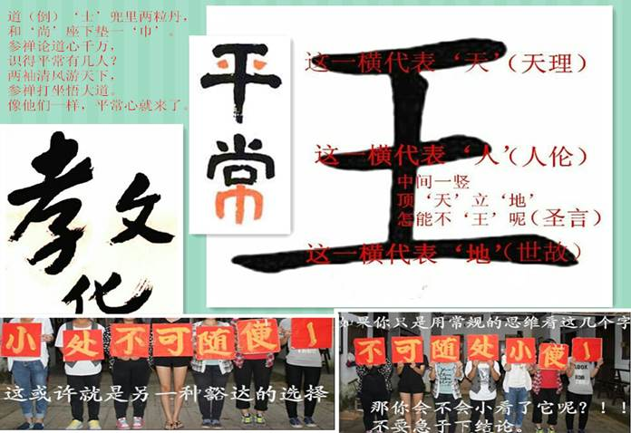
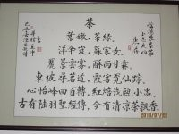

2015年梅州明明德书院快乐国学经典夏令营开始报名了！
一、活动宗旨
以“快乐读经”为理念，秉承“志于道、据于德、依于仁、游于艺”的宗旨，致力于幼年养性、童蒙养正、少年养志的经典文化教育事业，推展国学启蒙教育，提倡伦理道德，弘扬中华文化。
二、活动时间安排
(10天：8月1日——8月10日，分二个阶段，一个阶段4天，间隔休整2天，旅游、观光、分享、交流）第一天报到、熟悉环境，第二阶段的最后1天汇报演出。
三、活动地点
梅州明明德书院（学校地点在国家AAAAA级旅游景区雁南飞，紧邻灵光寺、雁鸣湖、叶剑英纪念园、桥溪古韵。梅州雁洋镇长教村长教小学内。）
四、作息时间安排
五、活动主题
1．国学经典
古人云：“祖宗虽远，祭祀不可不诚；子孙虽愚，经书不可不读。”儿童天性未污染前，善言易入；先入为主，及其长而不易变；故人之善心、信心，须在儿童时培养；凡为父母者，在其子女少时，即当教以读诵经典，以培养其根本智慧及定力；长大之后，这些经书所言的修身、齐家、治国、平天下智慧，早已自然而然潜移默化于小孩的身心当中。我们坚信：透过经典文化的教育，培植孩子们孝亲尊师的敦厚家风，于他生命长河的涵泳必是裨益良多。
健全人格、培养情操、塑造品德、铸造精神、提升智力。
.jpg)
2．读书交流
“读书已成了我的一种生活方式”习近平总书记如是说。
2014年10月16日，在习总书记的倡议下召开了文艺工作座谈会，在大约2个小时的讲话中，习总书记不但对当前文艺现状发表看法和评论，更深情回忆了自己少年和知青时期的文艺生活，谈到了文艺对自己成长的影响。“文以载道、以文化人……历史上，中华民族之所以有地位有影响，不是穷兵黩武，不是对外扩张，而是中华文化具有强大感召力。……好的文艺作品能启迪思想，温润心灵。”
同年2月和3月，习大大在俄罗斯索契和法国巴黎两次向媒体公开了自己的阅读“书单”，涉及到的作家包括克雷洛夫、普希金、果戈里、莱蒙托夫、屠格涅夫、陀思妥耶夫斯基、涅克拉索夫、车尔尼雪夫斯基、托尔斯泰、契诃夫、肖洛霍夫、孟德斯鸠、伏尔泰、卢梭、狄德罗、圣西门、傅立叶、萨特、蒙田、拉封丹、莫里哀、司汤达、巴尔扎克、雨果、大仲马、乔治·桑、福楼拜、小仲马、莫泊桑、罗曼·罗兰、拜伦、雪莱、萧伯纳、狄更斯、歌德、席勒、海涅、惠特曼、马克·吐温、杰克·伦敦、海明威等。
做个读纸质书的低头一族。
3．识物析名
大自然是最好的老师。
广东梅州近年重生态旅游空前的迅速发展，成为珠三角的天然氧吧，修心养性的后花园。学校地处雁南飞、桥溪古韵5A级风景区内，原始林区植被繁茂，古木成林，植物物种丰富， 置身在大自然中，认识植物（农作物），了解植物与人类的生活的影响并亲自栽种。
让孩子们在生活中，时时留意身边的花花草草，与人分享，体会大自然带给我们的快乐、智慧、感悟……
.jpg)
4．汉字意义
随着电脑的普及，网络的覆盖，人们用笔书写的习惯正在慢慢地消失；小学的汉字教学，基本上停留在读音和字形上，对字义不敢深入挖掘。久而久之，将不会写字，对汉字丰富的内涵也将无从谈起，离开电脑，写出文章了。这不是危言耸听，应引起家长们的关注。不要让孩子们因为网络，懒得记懒得学——到网上查查就行了。
汉字的内涵，丰富多彩。我们不得不对创造出这样的文字的我们的祖先顶礼膜拜，为之折服。潜心研究，你会走近一个浩瀚无边的人文世界。汉字不仅是方块字，它还有情有义，有血有肉。

5．客家文化
梅州是国家历史文化名城，是我国汉族客家人最集中的聚居地，素有“世界客都”之称，客家民系深厚的文化积淀，独特的民俗风情，神奇的迁徙历史，誉称为华传统文化的“活化石”、“生活中的古典”在中国民俗史上占用极高的历史地位和很高的研究价值。
梅州本地国家级导游老师授课，结合实地（美丽乡村——桥溪古村落），讲解包括客家语、戏剧、音乐、舞蹈、工艺、民俗、建筑、人文、饮食等方面的内容。
.jpg)
6. 特色游戏、活动
a.户外拓展活动（游戏训练）
.jpg)
b.中国绳结与生存技巧训练
.jpg)
.jpg)
c. 武术、大极拳、花样跳绳等。
d. 菜园劳动体验。
e.雁南飞体验学习茶艺
f.多米诺骨牌团体制作
.jpg)
g.独一无二暗示教育：你是唯一的。
每个人身上都蕴含着中华文化的精华，等待你的开发挖掘，从人的名字入手，解读汉字，真正喜欢上你自己，对学生终生进行积极的暗示教育。
嵌名诗赠陈宇沐、蔡惠夫妇，祝小公主陈韵琪快乐读书健康成长
韵风律雅风尘意，
琪花瑶草玉树花；
器宇轩昂庇高堂，
恩沐润泽惠后裔。
示例2：
嵌名诗赠于宝杰、丘嘉夫妇，祝小公子于树成快乐读书健康成长。
怀宝兴邦万人杰。
聚丘拢顶孚于嘉。
世纪之计树成盖。
终身之谋人豁达。
（怀宝兴邦：古书有“怀其宝而迷其邦，可谓仁乎？”意思是‘有才德而不出来为国家效力，不能称作仁’，祝愿小公子好好学习，学有所成旺家兴邦。万人杰：五人曰茂，十人曰选，百人曰俊，千人曰英，倍英曰贤，万人曰杰,万杰曰圣
<五里挑的叫茂才，十里挑的叫选才，百里挑的叫俊才，千里挑的叫英才，能力超越英才数倍的称为贤人，万里挑一的是人杰，从众人杰中脱颖而出的称为圣人。>
聚丘拢顶：从成语‘聚沙成塔’而来，要注重知识的积累。孚于嘉：“嘉”，古有“善”、“美”、“赞许”、“欢乐”很多种的含义，‘孚’的信服，诚信之意，也就是‘对美善之事保持诚信,使人信服’。‘ 世纪之计’即‘百年之计’，百年之计、终身之计在于树人，人成才了自然就豁达了。）
嵌名诗赠温勇晖、黎俊秀夫妇，祝小公子温智博快乐读书健康成长。
勇且不惧仁者心，晖洒万物君子光。
俊德克明睦九族，秀外惠中和四方。
智者知人自胜强，博者闻多通大道。
温文尔雅淑善家，黎庶淳厚质朴风。
（勇且不惧仁者心：儒家的伦理范畴。指果断、勇敢。孔子把“勇”作为施“仁”的条件之一。“勇”必须符合“仁、义、礼、智”，而且不能“疾贫”，才能成其为勇。《论语·宪问》：“仁者必有勇。”又《阳货》：“君子有勇而无义为乱。”又《子罕》：“知者不惑，仁者不忧，勇者不惧。”晖洒万物君子光：‘晖’就是太阳光，万物生长靠太阳，阳光也称为‘君子光’。 俊德克明睦九族：俊：通“峻”，大，崇高 德：德行，品德，克：能够 明：弘扬，发扬。意为能够弘扬光明的品德。秀外惠中和四方：做人要秀外惠中和谐四方。智者知人自胜强：“能够了解别人的人，是有智慧的人（知人者智）；能够了解自己的人，是聪明的人（自知者明）。明，是对世界本质的认识，具有无限性和客观全面性。欲求真知灼见，必返求于道。只有自知之人，才是真正的觉悟者。胜人者有力，自胜者强。“胜人者”，凭借的是自我个体的蛮力；“自胜者”，凭借的是坚强的意志。能够战胜自我的人，是具有天地之志的人。天地之志是收获大道、战胜一切的力量源泉。只有“自胜者”，才是真正的强者。）
赠黄日东、范民利夫妇，祝黄嫄基、黄家妮姐妹快乐读书健康成长。
开天辟地炎黄裔，承天远志华夏族。
帝喾姜嫄仪天下，后稷奠基礼圣母。
中兴家道托厚意，黄氏妮子寄深情。
佩紫怀黄日东升，降恩垂范民利泽。
赠熊衡基、熊恒业俩兄弟
小权长衡平为重，大厦实基稳为要。
持事贵恒德之固，勤情精业艺之长。
北岳恒山势如行，南岳衡山动若飞。
五尊有二创基业，朱雀玄武耀宗祠。
宝塔茶诗赠叶小忠老师及夫人苏丽女士，祝福公子公主雨霖酥霖
茶
叶嫩，茶绿。
洋伞岌，苏家女。
丽景云雾，酥雨甘霖。
东坡寻茗道，霞客觅仙踪。
心怡峰回百转，红焙浅瓯小盅。
古有陆羽圣经传，今有清凉茶飘香。
（注：叶老师家住风景秀美的梅州清凉山洋伞岌百年茶场。）

示例7：人名倒塔诗（钟鲜惠）
古寺幽幽送晨钟（风）
蓓蕾点点露芷鲜（华）
闻鸡催日人通惠（绝）
静听天籁远近佳（妙）
钟鸣晨寺声更幽
鲜蓓露兰香愈远
惠人通悟心生静
佳丽天成意真诚
钟鸣晨寺声幽
鲜蓓露兰香远
惠人通悟心静
佳丽天成意真
钟鸣晨寺声
鲜蓓露兰香
惠人通悟心
佳丽天成意
钟鸣晨寺
鲜蓓露兰
惠人通悟
佳丽天成
钟鸣寺
鲜蓓兰
惠人悟
佳丽成
钟鸣
鲜蓓
惠人
佳丽
钟
鲜
惠
佳
（注：倒过来就成了增字格）
h. 星光夜谈分享心得
长教学校，周边葱郁，夏夜清凉，星光点点，支起帐蓬，分享当下。
.jpg)
营期时间：8月1日——8月10日
报到时间：8月1日上午
招生对象：8-16岁学生，拟招50人。
营期费用：2900元/人/期
其中学费1000元、食宿费1000元、服装费200元、书法教材费250元、旅游费保险费200元、户外生存技能工具250元（户外生存教学使用的便携式帐篷一顶、救生绳索、编织绳索、急救包一件，闭营后可带回家。）。请自备毛巾、牙刷、肥皂、等日用品及多套日常宽松舒适服装。
举办地点：梅州雁阳长教学校
【报名注意】： 1、可加QQ：2239495158共享空间里下载报名申请表。 2、填写报名表回传至QQ邮箱；
【入营须知】：1、严禁携带各种电子产品（ip、手机、照相机、MP3、游戏机等）、零食，除暑假作业外，不带课外书（夏令营会提供）。有音乐美术或其它专长的学员，可在报名中注明。也可将便于携带的乐器或画板（长教周边是很棒的写生基地）带到夏令营。 2、夏令营期间一律不接待家长探访，不通电话，不收包裹，若有特殊情况，与其带班老师联系。 3、将建立夏令营家长微信群，全方位动态展现子女的的状况。 以上几条，目的在于排除干扰，潜心修学，融入经典，打开与天地自然相往来的心灵潜能。
【缴费方式】： 中国建设银行账号：6236 6832 0000 0328 835